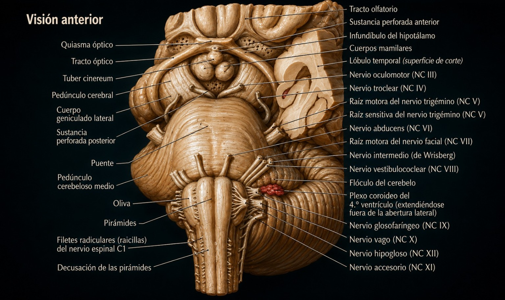
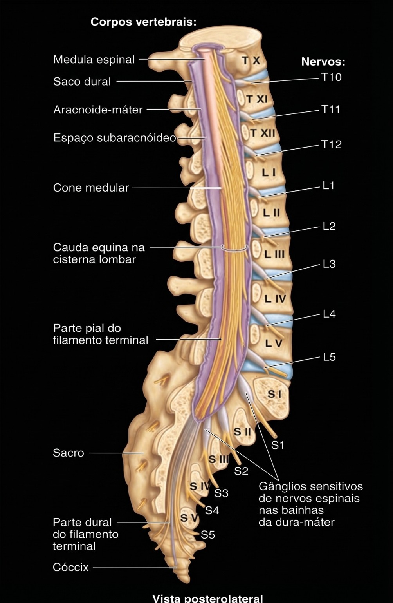
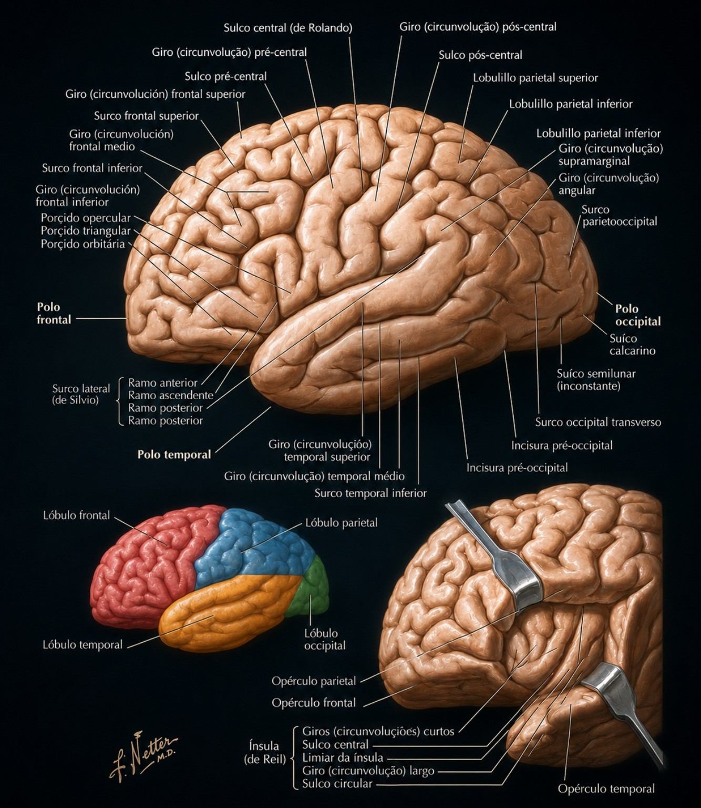
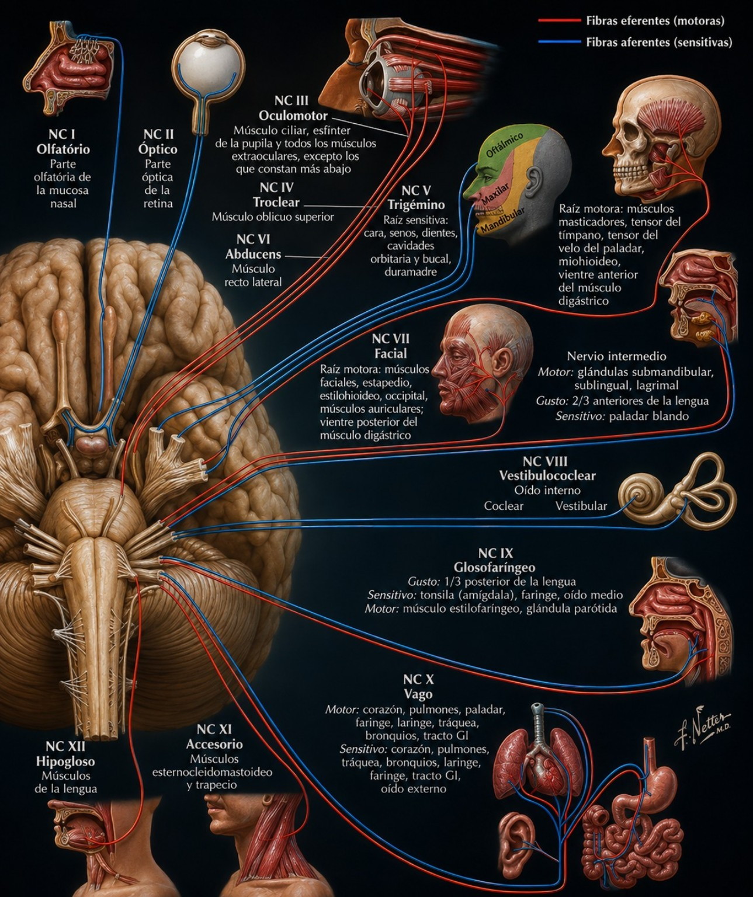
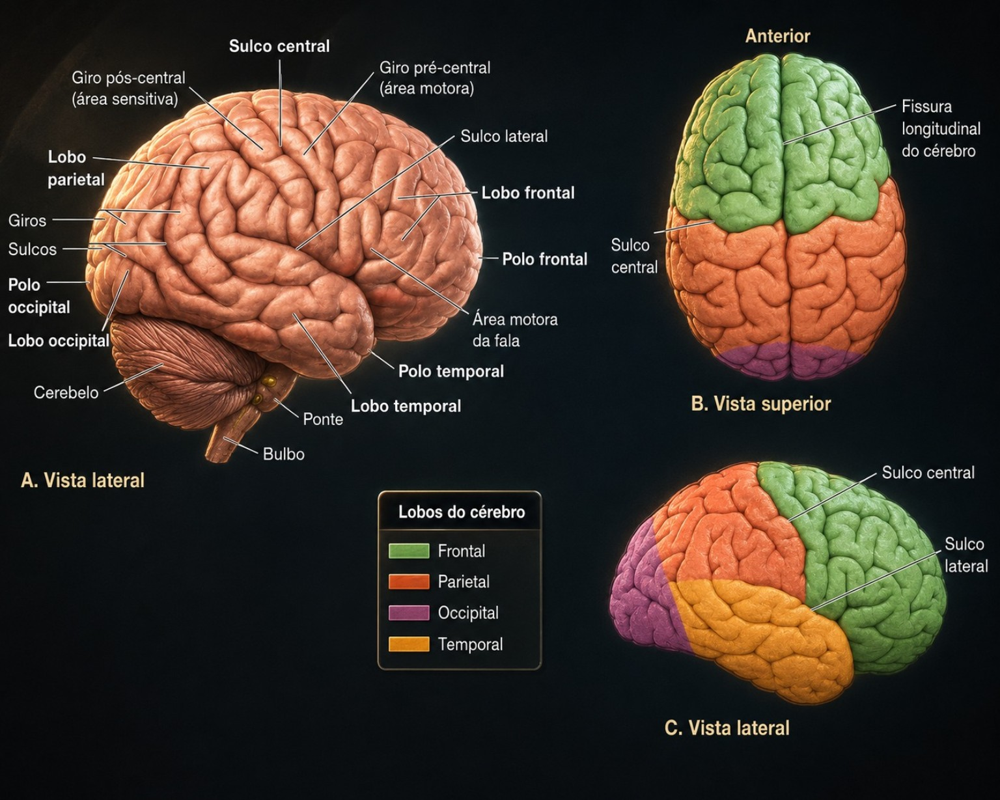
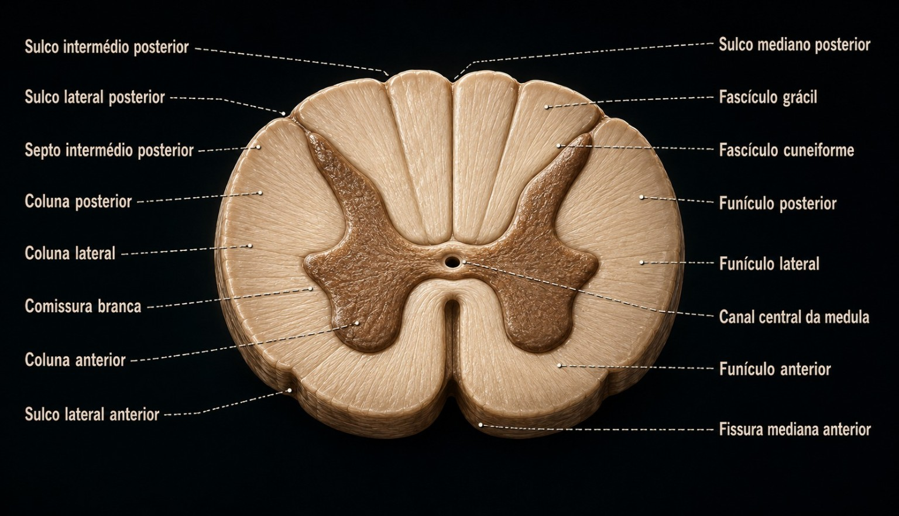
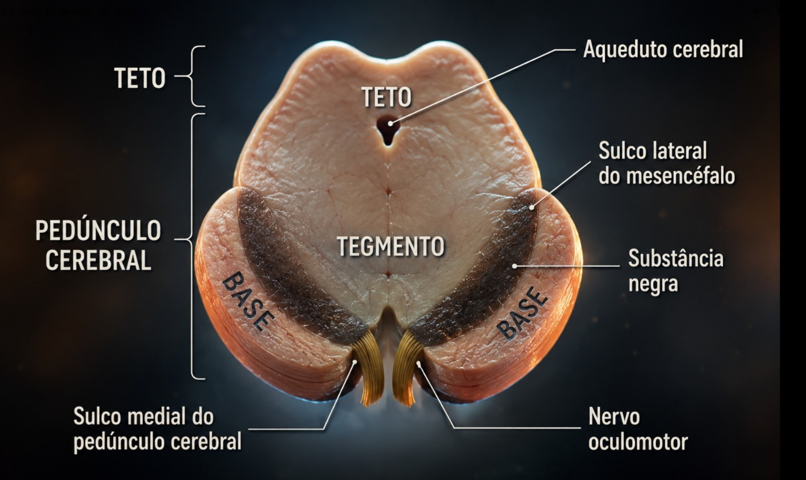

Atlas anatômico digital e caderno de laboratório
Explore o roteiro, identifique estruturas, registre observações e fotografias e acompanhe seu progresso.
Organização do Sistema Nervoso
Sistema Nervoso → SNC (Medula espinal + Encéfalo: tronco encefálico, cerebelo, cérebro → telencéfalo + diencéfalo) · SNP (Nervos, gânglios, terminações nervosas → 12 pares cranianos + 31 pares espinhais)
Medula Espinal
Situada no canal vertebral, mede aproximadamente 45 cm, no adulto; cranialmente limita-se no bulbo, ao nível do forame magno, e seu limite caudal situa-se geralmente ao nível da 2ª vértebra lombar (L2). Em corte transversal da medula, identifique: fissura mediana anterior; substância cinzenta — coluna anterior, coluna posterior e coluna lateral (T1 a L2); canal central da medula; substância branca — funículo anterior, lateral e posterior. Na extremidade inferior, reconheça também o cone medular, a cauda equina e o filamento terminal.
Tronco Encefálico
Interpõe-se entre a medula e o diencéfalo, situando-se ventralmente ao cerebelo. Bulbo: forma de cone, cuja extremidade menor continua caudalmente com a medula espinal. Na face ventral: pirâmides. Na face dorsal: IV ventrículo. Ponte: situada entre o bulbo e o mesencéfalo. Identifique pedúnculos cerebelares médios, sulco basilar e sulco bulbopontino. Mesencéfalo: conecta o cérebro à ponte. Identifique aqueduto do mesencéfalo, pedúnculos cerebrais e colículos superiores e inferiores.
Cerebelo
Em visão póstero-superior: vérmis e hemisférios cerebelares direito e esquerdo. Em secção mediana: corpo medular do cerebelo (substância branca) e córtex cerebelar (substância cinzenta).
Diencéfalo
Em encéfalo com corte mediano: tálamo, sulco hipotalâmico, aderência intertalâmica, hipotálamo e epitálamo.
Telencéfalo
Em cérebro inteiro: fissura longitudinal e hemisférios direito e esquerdo. Reconheça sulco lateral e sulco central; lobos frontal, temporal, parietal, occipital e ínsula. Lobo frontal: sulco pré-central, sulcos frontal superior e inferior, giro pré-central, giro frontal inferior e área de Broca. Lobo temporal: giro temporal superior, sulco temporal superior, giro temporal médio, sulco temporal inferior, giro temporal inferior e giro temporal transverso anterior (área auditiva primária). Lobo parietal: sulco pós-central, giro pós-central e área somestésica primária; área gustativa primária na porção inferior do giro pós-central, próxima à ínsula. Face medial: corpo caloso; no occipital, sulco calcarino e área visual primária; no frontal, giro do cíngulo. Face inferior temporal: úncus, giro para-hipocampal e área olfatória primária. Face inferior frontal: bulbo olfatório, trato olfatório e nervo olfatório (I). Na face inferior do encéfalo: nervo óptico (II).
Nervos Espinhais
31 pares: 8 cervicais, 12 torácicos, 5 lombares, 5 sacrais e 1 coccígeo. Identifique raiz ventral do nervo espinal e raiz dorsal do nervo espinal (gânglio dorsal).
Sistema Ventricular
Identifique os ventrículos encefálicos. Trajeto do líquor: ventrículos laterais → forame interventricular → III ventrículo → aqueduto do mesencéfalo → IV ventrículo → espaço subaracnóideo → granulações aracnóideas → reabsorção → sistema venoso.
Meninges
Observe como dura-máter, aracnoide e pia-máter envolvem o tecido nervoso no encéfalo e na medula. Espaço subdural: entre dura-máter e aracnoide. Espaço subaracnóideo: entre aracnoide e pia-máter, contendo líquor e comunicando encéfalo e medula. Espaço extradural: entre dura-máter e periósteo do canal vertebral, com tecido adiposo e veias; não existe nesse formato no nível craniano.
Nervos Cranianos
| Nº | Nervo | Função | Componentes |
|---|---|---|---|
| I | Olfatório | Olfato | Sensitivo |
| II | Óptico | Visão | Sensitivo |
| III | Oculomotor | Motricidade dos músculos ciliares, esfíncter da pupila e músculos extrínsecos do bulbo do olho, exceto os relacionados a IV e VI | Motor |
| IV | Troclear | Motricidade do músculo oblíquo superior do bulbo do olho | Motor |
| V | Trigêmeo | Mastigação; sensibilidade da face, seios da face e dentes | Sensitivo e motor |
| VI | Abducente | Motricidade do músculo reto lateral do bulbo do olho | Motor |
| VII | Facial | Mímica facial; gustação no terço anterior da língua | Sensitivo e motor |
| VIII | Vestibulococlear | Orientação/movimento e audição | Sensitivo |
| IX | Glossofaríngeo | Gustação no terço posterior da língua; sensibilidade da faringe, laringe e palato | Sensitivo e motor |
| X | Vago | Sensibilidade de orelha, faringe, laringe, tórax e vísceras; inervação visceral | Sensitivo e motor |
| XI | Acessório | Controle motor da faringe, laringe, palato, esternocleidomastoideo e trapézio | Motor |
| XII | Hipoglosso | Motricidade dos músculos da língua, exceto palatoglosso | Motor |
Atlas Prático
As 12 imagens enviadas estão incorporadas ao aplicativo. Toque em uma imagem para ampliar.


📸 Fotografar cada estrutura
Cada estrutura anatômica possui câmera própria. É possível tirar várias fotos ou selecionar várias imagens; elas ficam organizadas pelo nome da estrutura e aparecem no PDF.
Coluna anterior
Coluna posterior
Coluna lateral
Canal central da medula
Funículo anterior
Funículo lateral
Funículo posterior
Pirâmides do bulbo
IV ventrículo
Pedúnculos cerebelares médios
Sulco basilar
Sulco bulbopontino
Aqueduto do mesencéfalo
Pedúnculos cerebrais
Colículos superiores
Colículos inferiores
Vérmis
Hemisfério cerebelar direito
Hemisfério cerebelar esquerdo
Corpo medular do cerebelo
Córtex cerebelar
Tálamo
Sulco hipotalâmico
Aderência intertalâmica
Hipotálamo
Epitálamo
Fissura longitudinal
Hemisfério cerebral direito
Hemisfério cerebral esquerdo
Sulco lateral
Sulco central
Lobo frontal
Lobo temporal
Lobo parietal
Lobo occipital
Ínsula
Sulco pré-central
Sulco frontal superior
Sulco frontal inferior
Giro pré-central
Giro frontal inferior
Área de Broca
Giro temporal superior
Sulco temporal superior
Giro temporal médio
Sulco temporal inferior
Giro temporal inferior
Giro temporal transverso anterior
Sulco pós-central
Giro pós-central
Área somestésica primária
Área gustativa primária
Corpo caloso
Sulco calcarino
Área visual primária
Giro do cíngulo
Úncus
Giro para-hipocampal
Área olfatória primária
Bulbo olfatório
Trato olfatório
Nervo olfatório (I)
Nervo óptico (II)
Raiz ventral do nervo espinal
Raiz dorsal do nervo espinal
Gânglio dorsal
Ventrículos laterais
Forame interventricular
III ventrículo
Espaço subaracnóideo
Granulações aracnóideas
Dura-máter
Aracnoide
Pia-máter
Espaço subdural
Espaço extradural
Nervo oculomotor (III)
Nervo troclear (IV)
Nervo trigêmeo (V)
Nervo abducente (VI)
Nervo facial (VII)
Nervo vestibulococlear (VIII)
Nervo glossofaríngeo (IX)
Nervo vago (X)
Nervo acessório (XI)
Nervo hipoglosso (XII)
Cone medular
Cauda equina
Filamento terminal
Oliva
Fascículo grácil
Fascículo cuneiforme
Decussação das pirâmides
Meu Caderno Fotográfico
Meu Progresso
0%
🧠 Atlas Anatômico — Imagens fornecidas
Toque em uma imagem para ampliá-la. As imagens são exibidas integralmente, sem recorte.






